tidyquant로 한국 주식 하려면 tqk
개요
tidyquant의 tq_get()으로 한국의 데이터를 가져오는데 제약이 있어 시작했습니다. 우선 code_get()으로 종목 코드를 가져오고, tqk_get()으로 tq_get()과 같은 양식의 데이터를 확보하여 이후 tidyquant의 모든 기능을 한국 데이터로 활용할 수 있습니다.
tidyquant 소개 - 주식 데이터를 tidy하게
tidyquant는 quantmod 등 주식 분석을 주 목적으로 하는 중요 함수를 제공하는 중요한 패키지입니다. tidy data 개념을 활용한 데이터 핸들링, ggplot과 연계된 강한 차트 그리기, 야후를 기본으로 구글 및 각자 독자적인 데이터 소스로 부터 필요한 데이터를 손쉽게 가져오는 기능, 성능 분석 함수들을 제공하고 있습니다.
주가 지수 가져오기
tidyquant는 야후 파이넨스에서 정보를 가져옵니다. 가져오는 데이터 소스를 바꾸고 싶으면 어떤 곳에서 가져올지 결정할 수 있는데, tq_get_options()는 가능한 후보를 보여줍니다.
if (!require(tidyquant)) install.packages("tidyquant", repos = "https://cloud.r-project.org/", verbose = F)
library(tidyquant)
tq_get_options()## [1] "stock.prices" "stock.prices.google" "stock.prices.japan"
## [4] "financials" "key.ratios" "dividends"
## [7] "splits" "economic.data" "exchange.rates"
## [10] "metal.prices" "quandl" "quandl.datatable"
## [13] "alphavantager" "rblpapi"이때 코스피와 코스닥을 이르는 이름이 각각 ^KS11와 ^KOSDAQ입니다. 각각 한번 가져와 보겠습니다.
## # A tibble: 2,671 x 7
## date open high low close volume adjusted
## <date> <dbl> <dbl> <dbl> <dbl> <dbl> <dbl>
## 1 2008-01-02 1891. 1892. 1853. 1853. 246800 1853.
## 2 2008-01-03 1834. 1858. 1822. 1853. 252800 1853.
## 3 2008-01-04 1854. 1870. 1824. 1864. 298600 1864.
## 4 2008-01-07 1816. 1841. 1814. 1831. 267800 1831.
## 5 2008-01-08 1839. 1841. 1819. 1826. 296000 1826.
## 6 2008-01-09 1802. 1844. 1794. 1844. 277200 1844.
## 7 2008-01-10 1848. 1855. 1825. 1825. 315200 1825.
## 8 2008-01-11 1845. 1847. 1776. 1782. 280200 1782.
## 9 2008-01-14 1781 1791. 1754. 1766. 249000 1766.
## 10 2008-01-15 1782. 1782. 1723. 1747. 295200 1747.
## # ... with 2,661 more rows## # A tibble: 1 x 7
## date open high low close volume adjusted
## <date> <dbl> <dbl> <dbl> <dbl> <dbl> <dbl>
## 1 2018-10-05 785. 791. 769. 774. 573663 774.각 기업의 주가를 가져오려면 종목 번호를 알고 있어야 합니다. 양식은 종목번호.KS입니다. 종목번호는 전자공시시스템에서 사용하는 번호입니다.

삼성전자 번호는 005930 이군요!
## # A tibble: 2,671 x 7
## date open high low close volume adjusted
## <date> <dbl> <dbl> <dbl> <dbl> <dbl> <dbl>
## 1 2008-01-02 11180 11200 10840 10880 18047200 0.873
## 2 2008-01-03 10760 11060 10640 10920 19346500 0.876
## 3 2008-01-04 10920 10960 10760 10780 17997350 0.865
## 4 2008-01-07 10360 10480 10340 10380 39787200 0.833
## 5 2008-01-08 10380 10480 10320 10320 24783700 0.828
## 6 2008-01-09 10340 10580 10260 10500 23865450 0.842
## 7 2008-01-10 10440 10580 10320 10320 31551350 0.828
## 8 2008-01-11 10360 10520 10220 10320 23425150 0.828
## 9 2008-01-14 10280 10520 10280 10500 22167000 0.842
## 10 2008-01-15 10660 10820 10420 10640 40283950 0.854
## # ... with 2,661 more rows날짜를 지정할 수도 있습니다.
## # A tibble: 83 x 7
## date open high low close volume adjusted
## <date> <dbl> <dbl> <dbl> <dbl> <dbl> <dbl>
## 1 2016-01-04 25200 25200 24100 24100 15346950 1177.
## 2 2016-01-05 24040 24360 23720 24160 10800100 1180.
## 3 2016-01-06 24160 24160 23360 23500 18337600 1148.
## 4 2016-01-07 23320 23660 23020 23260 14119400 1136.
## 5 2016-01-08 23260 23720 23260 23420 12888150 1144.
## 6 2016-01-11 23120 23320 22920 23040 12063850 1125.
## 7 2016-01-12 22960 23320 22880 22920 10314150 1120.
## 8 2016-01-13 23060 23180 22960 22960 7165800 1122.
## 9 2016-01-14 22620 22840 22620 22760 10451100 1112.
## 10 2016-01-15 22800 23040 22480 22640 10473200 1106.
## # ... with 73 more rows배당금 정보는 dividends 에서 확인하시면 됩니다.
## # A tibble: 24 x 2
## date dividends
## <date> <dbl>
## 1 2008-06-27 500
## 2 2008-12-29 5000
## 3 2009-06-29 500
## 4 2009-12-29 7500
## 5 2010-06-29 5000
## 6 2010-12-29 5000
## 7 2011-06-29 500
## 8 2011-12-28 5000
## 9 2012-06-28 500
## 10 2012-12-27 7500
## # ... with 14 more rows야후 파이넨스가 데이터 소스이다 보니 모든 정보가 있다고 보기 어렵니다. 거기다 종목 번호를 일일이 찾는 것도 힘들구요. 이런 문제를 해결하기 위해서 tqk가 시작됬습니다.
tqk 소개 - 한국 주식 데이터 패키지
종목 코드 가져오기
본래 tidyquant 패키지는 symbol(ex> 애플사는 AAPL)를 인자로 주식 데이터를 가져옵니다. 한국 주식은 각 종목별로 코드가 있으며 그것 때문에 코드와 종목명이 매치되있는 데이터를 확인할 수 있어야 합니다. tqk 패키지는 code_get()함수를 통해 진행 가능합니다.
if (!require(remotes)) install.packages("remotes", verbose = F)
if (!require(tqk)) remotes::install_github("mrchypark/tqk", verbose = F)
library(tqk)
code<-code_get()
code## # A tibble: 2,306 x 3
## code name category
## <chr> <chr> <chr>
## 1 060310 3S KOSDAQ
## 2 095570 AJ네트웍스 KOSPI
## 3 068400 AJ렌터카 KOSPI
## 4 006840 AK홀딩스 KOSPI
## 5 054620 APS홀딩스 KOSDAQ
## 6 265520 AP시스템 KOSDAQ
## 7 211270 AP위성 KOSDAQ
## 8 152100 ARIRANG 200 ETF
## 9 222170 ARIRANG S&P한국배당성장 ETF
## 10 161490 ARIRANG 경기방어주 ETF
## # ... with 2,296 more rows주식 데이터 가져오기
tqk_get()은 종목 코드로 데이터를 가져오도록 만들었습니다.
ss_prices <-
code_get() %>%
filter(grepl("^삼성전자$",name)) %>%
select(code) %>%
tqk_get(from = "2017-01-01")## [1] "please wait for getting data using internet."
## [1] "close and adjusted are same now."## # A tibble: 471 x 7
## date open high low close volume adjusted
## <date> <int> <int> <int> <int> <dbl> <int>
## 1 2017-01-02 35980 36240 35880 36100 4650600 36100
## 2 2017-01-03 36280 36620 36020 36480 7357650 36480
## 3 2017-01-04 36500 36520 36100 36160 7971750 36160
## 4 2017-01-05 36060 36060 35540 35560 10967450 35560
## 5 2017-01-06 36180 36440 36040 36200 8880950 36200
## 6 2017-01-09 36600 37500 36560 37220 13194900 37220
## 7 2017-01-10 37280 37400 37080 37240 9099800 37240
## 8 2017-01-11 37520 38560 37420 38280 12018150 38280
## 9 2017-01-12 38000 38800 37980 38800 11669150 38800
## 10 2017-01-12 38000 38800 37980 38800 11669150 38800
## # ... with 461 more rows데이터는 주요 사이트인 n사, d사, p사 를 모두 대응하는 것을 목표로 하고 있고, 현재 p사(구현 편의성)로 작성되어 있습니다.
Quandl
Quandl은 방대한 양의 경제, 주식에 대한 정보를 가지고 서비스하는 데이터 판매 기업입니다. Quandl이라는 자체 패키지만을 사용해도 되고, tidyquant가 내장하고 있어서 같이 사용해도 됩니다.
tidyverse와 함께 사용하는 시계열 데이터
그 동안의 주식관련 패키지들은 파이프 연산자 %>%와 함꼐 사용하지 못했는데, tidyquant는 그런 문제를 해결하였습니다. 아래 2가지 중요한 함수를 추가함으로써 dplyr과 tidyr의 함수와 함께 사용할 수 있게 되었습니다.
-
tq_transmute(): 계산된 내용의 컬럼만으로 데이터를 구성합니다. -
tq_mutate(): 데이터에 계산된 내용의 컬럼을 추가합니다.
tq_에서 계산 가능한 함수들
tq_transmute_fun_options() 함수는 각 참고 패키지에서 활용할 수 있는 함수의 리스트를 보여줍니다. 모두 zoo, xts, quantmod, TTR, PerformanceAnalytics의 5개 패키지내의 함수를 지원합니다.
## List of 5
## $ zoo : chr [1:14] "rollapply" "rollapplyr" "rollmax" "rollmax.default" ...
## $ xts : chr [1:27] "apply.daily" "apply.monthly" "apply.quarterly" "apply.weekly" ...
## $ quantmod : chr [1:25] "allReturns" "annualReturn" "ClCl" "dailyReturn" ...
## $ TTR : chr [1:62] "adjRatios" "ADX" "ALMA" "aroon" ...
## $ PerformanceAnalytics: chr [1:7] "Return.annualized" "Return.annualized.excess" "Return.clean" "Return.cumulative" ...zoo 함수
## [1] "rollapply" "rollapplyr" "rollmax"
## [4] "rollmax.default" "rollmaxr" "rollmean"
## [7] "rollmean.default" "rollmeanr" "rollmedian"
## [10] "rollmedian.default" "rollmedianr" "rollsum"
## [13] "rollsum.default" "rollsumr"- 롤링관련 함수 :
- 롤링 마진에 기능을 적용하는 일반적인 기능.
- form :
rollapply(data, width, FUN, ..., by = 1, by.column = TRUE, fill = if (na.pad) NA, na.pad = FALSE, partial = FALSE, align = c("center", "left", "right"), coredata = TRUE). - 옵션에는
rollmax,rollmean,rollmedian,rollsum등이 있습니다.
xts 함수
## [1] "apply.daily" "apply.monthly" "apply.quarterly"
## [4] "apply.weekly" "apply.yearly" "diff.xts"
## [7] "lag.xts" "period.apply" "period.max"
## [10] "period.min" "period.prod" "period.sum"
## [13] "periodicity" "to.daily" "to.hourly"
## [16] "to.minutes" "to.minutes10" "to.minutes15"
## [19] "to.minutes3" "to.minutes30" "to.minutes5"
## [22] "to.monthly" "to.period" "to.quarterly"
## [25] "to.weekly" "to.yearly" "to_period"- 기간 적용 기능 :
- 기능을 시간 세그먼트 (예 :
max,min,mean등)에 적용합니다. - 양식 :
apply.daily (x, FUN, ...). - 옵션은
apply.daily,weekly,monthly,quarterly,yearly를 포함합니다.
- 기능을 시간 세그먼트 (예 :
- 기간 기능 :
- 시계열을 낮은 주기성의 시계열로 변환합니다 (예 : 매일 매일의 주기성으로 변환).
- 형식 :
to.period (x, period = 'months', k = 1, indexAt, name = NULL, OHLC = TRUE, ...). - 옵션에는
to.minutes,hourly,daily,weekly,monthly,quarterly,yearly가 포함됩니다. -
참고 :
to.period와to.monthly(to.weekly,to.quarterly등) 양식의 리턴 구조는 다릅니다.to.period는 날짜를 반환하고, to.months는 MON YYYY 문자를 반환합니다.lubridate를 통해 시계열로 작업하고 싶다면to.period를 사용하는 것이 가장 좋습니다.
quantmod 함수
## [1] "allReturns" "annualReturn" "ClCl"
## [4] "dailyReturn" "Delt" "HiCl"
## [7] "Lag" "LoCl" "LoHi"
## [10] "monthlyReturn" "Next" "OpCl"
## [13] "OpHi" "OpLo" "OpOp"
## [16] "periodReturn" "quarterlyReturn" "seriesAccel"
## [19] "seriesDecel" "seriesDecr" "seriesHi"
## [22] "seriesIncr" "seriesLo" "weeklyReturn"
## [25] "yearlyReturn"- 비율 변경 (Delt) 및 Lag 기능
- Delt :
Delt (x1, x2 = NULL, k = 0, type = c ( "arithmetic", "log"))- Delt의 변형 : ClCl, HiCl, LoCl, LoHi, OpCl, OpHi, OpLo, OpOp
- 양식 :
Opcl (OHLC)
- Lag :
Lag(x, k = 1)/ Next :Next(x, k = 1)(dplyr :: lag과dplyr :: lead도 사용할 수 있습니다)
- Delt :
- 기간 반환 함수 :
- 매일, 매주, 매월, 분기 별 및 연간을 포함하는 다양한주기에 대한 산술 또는 로그 반환을 가져옵니다.
- 형식 :
periodReturn (x, period = 'monthly', 부분 집합 = NULL, type = 'arithmetic', leading = TRUE, ...)
- 시리즈 기능 :
- 계열을 설명하는 반환 값. 옵션에는 증감, 가감 및 고저 설명이 포함됩니다.
- 양식 :
seriesHi (x),seriesIncr (x, thresh = 0, diff. = 1L),seriesAccel (x)
TTR 함수
## [1] "adjRatios" "ADX" "ALMA"
## [4] "aroon" "ATR" "BBands"
## [7] "CCI" "chaikinAD" "chaikinVolatility"
## [10] "CLV" "CMF" "CMO"
## [13] "DEMA" "DonchianChannel" "DPO"
## [16] "DVI" "EMA" "EMV"
## [19] "EVWMA" "GMMA" "growth"
## [22] "HMA" "KST" "lags"
## [25] "MACD" "MFI" "momentum"
## [28] "OBV" "PBands" "ROC"
## [31] "rollSFM" "RSI" "runCor"
## [34] "runCov" "runMAD" "runMax"
## [37] "runMean" "runMedian" "runMin"
## [40] "runPercentRank" "runSD" "runSum"
## [43] "runVar" "SAR" "SMA"
## [46] "SMI" "SNR" "stoch"
## [49] "TDI" "TRIX" "ultimateOscillator"
## [52] "VHF" "VMA" "volatility"
## [55] "VWAP" "VWMA" "wilderSum"
## [58] "williamsAD" "WMA" "WPR"
## [61] "ZigZag" "ZLEMA"- 웰즈 와일더의 방향 운동 지수 : *
ADX (HLC, n = 14, maType, ...) - 볼린저 밴드 :
- BBands (HLC, n = 20, maType, sd = 2, …) : 볼린저 밴드
- 변화율 / 운동량 :
ROC (x, n = 1, type = c ( "연속", "이산"), na.pad = TRUE): 변화율운동량 (x, n = 1, na.pad = TRUE): 운동량 - 이동 평균 (maType) :
SMA (x, n = 10, ...): 단순 이동 평균EMA (x, n = 10, wilder = FALSE, ratio = NULL, ...): 지수 이동 평균- DEMA (x, n = 10, v = 1, wilder = FALSE, ratio = NULL)`: 이중 지수 이동 평균
- WMA (x, n = 10, wts = 1 : n, …)`: 가중 이동 평균
- EVWMA (가격, 수량, n = 10, …) : 탄성, 체중 이동 평균
ZLEMA (x, n = 10, 비율 = NULL, ...): Zero Lag Exponential Moving AverageVWAP (가격, 물량, n = 10, ...): 물량 가중 평균 가격 - VMA (x, w, 비율 = 1, …) : 가변 길이 이동 평균
HMA (x, n = 20, ...): 선체 이동 평균ALMA (x, n = 9, offset = 0.85, sigma = 6, ...): Arnaud Legoux 이사 평균
- MACD Oscillator : MACD (x, nFast = 12, nSlow = 26, nSig = 9, maType, percent = TRUE, …)
- 상대 강도 지수 : *
RSI (가격, n = 14, maType, ...) - runFun :
runSum (x, n = 10, cumulative = FALSE): n- 기간 이동 윈도우에 대한 합계를 반환합니다.runMin (x, n = 10, cumulative = FALSE): n- 기간 이동 윈도우에 대한 최소값을 반환합니다.runMax (x, n = 10, cumulative = FALSE): n- 기간 이동 윈도우에 대해 최대 값을 반환합니다.runMean (x, n = 10, cumulative = FALSE): n-period 이동 윈도우를 의미합니다. *runMedian (x, n = 10, non.unique = "mean", cumulative = FALSE): n-period 이동 윈도우에 대한 중앙값을 반환합니다.-
runCov (x, y, n = 10, use = "all.obs", sample = TRUE, 누적 = FALSE): n-period 이동 윈도우에 대한 공분산을 반환합니다.runCor (x, y, n = 10, use = "all.obs", sample = TRUE, 누적 = FALSE): n-period 이동 윈도우에 대한 상관 관계를 반환합니다.runVar (x, y = NULL, n = 10, 샘플 = TRUE, 누적 = FALSE): n- 기간 이동 윈도우에 대한 분산을 반환합니다.runSD (x, n = 10, 샘플 = TRUE, 누적 = FALSE): n- 기간 이동 윈도우에 대한 표준 편차를 반환합니다.runMAD (x, n = 10, center = NULL, stat = "중간 값", 상수 = 1.4826, non.unique = "평균", cumulative = FALSE)n 기간 이동에 대한 중간 / 평균 절대 편차를 반환합니다. 창문.wilderSum (x, n = 10): n- 기간 이동 윈도우에 대해 Welles Wilder 스타일 가중치 합계를 되 돌린다.
-
- Stochastic Oscillator / Stochastic Momentum Index : Stochastic Oscillator (HLC, nFastK = 14, nFastD = 3, nSlowD = 3, maType, bounded = TRUE, smooth = 1, …)
- SMI (HLC, n = 13, nFast = 2, nSlow = 25, nSig = 9, maType, bounded = TRUE, …) : 확률 모멘텀 지수
PerformanceAnalytics 함수
## [1] "Return.annualized" "Return.annualized.excess"
## [3] "Return.clean" "Return.cumulative"
## [5] "Return.excess" "Return.Geltner"
## [7] "zerofill"Return.annualized 및Return.annualized.excess : 기간 반환을 취하여 연간 수익으로 통합합니다. Return.clean : 반환 값에서 특이 값을 제거합니다. Return.excess : 무위험 이자율을 초과하는 수익률로 수익률에서 무위험 이자율을 제거합니다. zerofill : ’NA’값을 0으로 대체하는 데 사용됩니다.
ggplot2와 연계된 차트 그리기
ggplot2 차트를 그리는데 R에서 가장 유명한 패키지 입니다. gg는 Grammar of Graphics의 줄임말로 그림을 생성하는 것에 대한 규칙을 제안하고 있습니다. tidyquant는 ggplot2에 더해 아래와 같은 기능을 추가로 제공합니다.
-
차트 종류 : 두 개의 차트 타입 시각화는
geom_barchart와geom_candlestick을 사용하여 가능합니다. - 이동 평균 : ’geom_ma’를 사용하여 7 개의 이동 평균 시각화를 사용할 수 있습니다.
- Bollinger Bands : Bollinger 밴드는 ’geom_bbands’를 사용하여 시각화 할 수 있습니다. BBand 이동 평균은 이동 평균에서 사용할 수있는 7 가지 중 하나 일 수 있습니다.
-
날짜 범위 확대 : 차트의 특정 영역을 확대 할 때 데이터 손실을 방지하는 두 가지
coord함수 (coord_x_date및coord_x_datetime)를 사용할 수 있습니다. 이것은 이동 평균 및 Bollinger 밴드 기하학을 사용할 때 중요합니다.
살펴보기
tqk_get를 이용해서 사용할 데이터를 가져옵니다. 내장 데이터인 SHANK과 삼성, 네이버를 예시로 사용하겠습니다.
## [1] "please wait for getting data using internet."
## [1] "close and adjusted are same now."## [1] "please wait for getting data using internet."
## [1] "close and adjusted are same now."’end` 매개 변수는 예제 전체에서 날짜 제한을 설정할 때 사용됩니다.
차트 종류
-
Bar Chart:
geom_barchart을 사용합니다. -
Candlestick Chart:
geom_candlestick을 사용합니다.
라인 차트
tidyquant의 geom_함수를 사용하여 가로 막대형 차트와 촛대형 차트를 시각화하기 전에 단순한 선 차트로 주가를 시각화하여 그래픽 문법을 확인해보겠습니다. 이것은ggplot2 패키지의geom_line을 사용하여 이루어집니다. 주식 데이터로 시작하고 파이프 연산자 (%> %)를 사용하여ggplot ()함수로 보냅니다.
SS %>%
ggplot(aes(x = date, y = close)) +
geom_line() +
labs(title = "SamSung Line Chart", y = "Closing Price", x = "") +
theme_tq()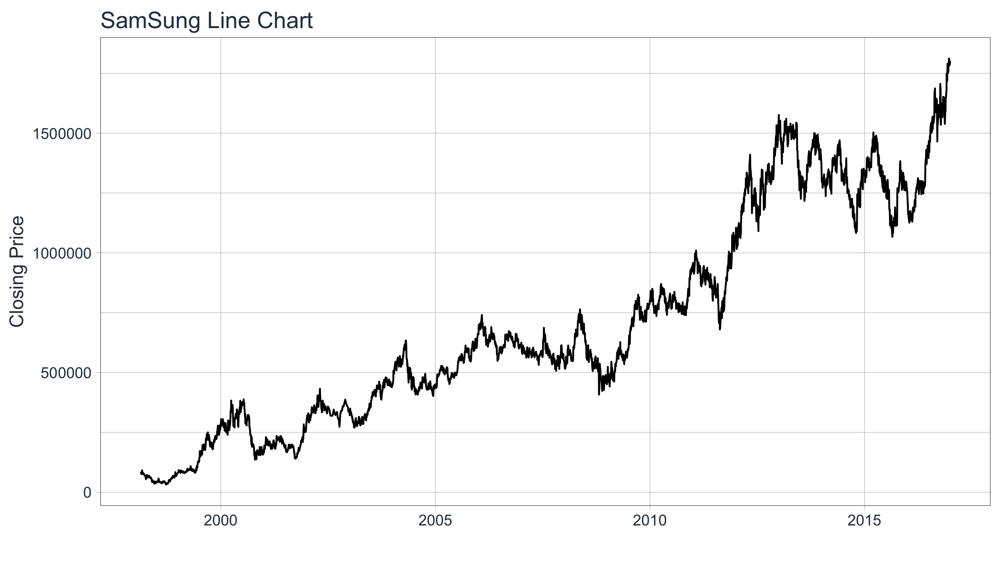
바 차트
바 차트는 geom_line를 geom_barchart로 바꾸는 걸로 해결됩니다. aes()내의 내용을 의미에 맞게 조정하는 것으로 바 차트를 그리는 것이 끝납니다.
SS %>%
ggplot(aes(x = date, y = close)) +
geom_barchart(aes(open = open, high = high, low = low, close = close)) +
labs(title = "SamSung Bar Chart", y = "Closing Price", x = "") +
theme_tq()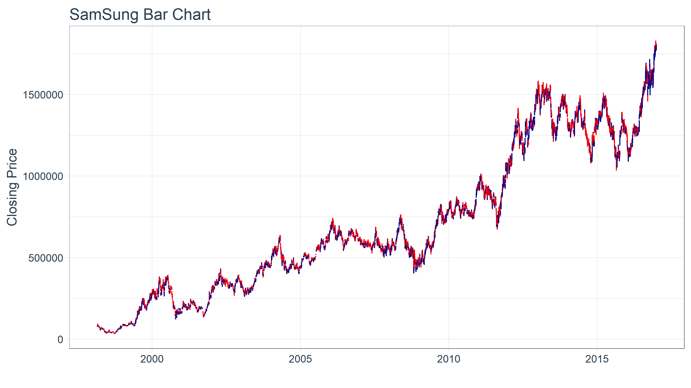
우리는coord_x_date를 사용하여 특정 섹션을 확대 / 축소합니다.이 섹션에는xlim 및ylim 인수가c (start, end)로 지정되어 차트의 특정 영역에 초점을 맞 춥니 다. xlim의 경우 우리는lubridate를 사용하여 문자 날짜를 날짜 클래스로 변환 한 다음weeks ()함수를 사용하여 6 주를 뺍니다. ylim의 경우 가격을 100에서 120까지 확대합니다.
SS %>%
ggplot(aes(x = date, y = close)) +
geom_barchart(aes(open = open, high = high, low = low, close = close)) +
labs(title = "SamSung Bar Chart",
subtitle = "Zoomed in using coord_x_date",
y = "Closing Price", x = "") +
coord_x_date(xlim = c(end - weeks(6), end),
ylim = c(1600000, 1800000)) +
theme_tq()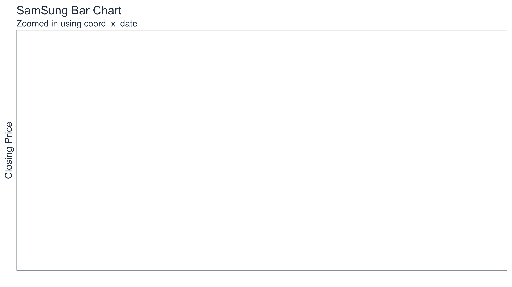
색상은color_up 및color_down 인수를 사용하여 수정할 수 있으며size와 같은 매개 변수를 사용하여 모양을 제어 할 수 있습니다.
SS %>%
ggplot(aes(x = date, y = close)) +
geom_barchart(aes(open = open, high = high, low = low, close = close),
color_up = "darkgreen", color_down = "darkred", size = 1) +
labs(title = "SamSung Bar Chart",
subtitle = "Zoomed in, Experimenting with Formatting",
y = "Closing Price", x = "") +
coord_x_date(xlim = c(end - weeks(6), end),
ylim = c(1600000, 1800000)) +
theme_tq()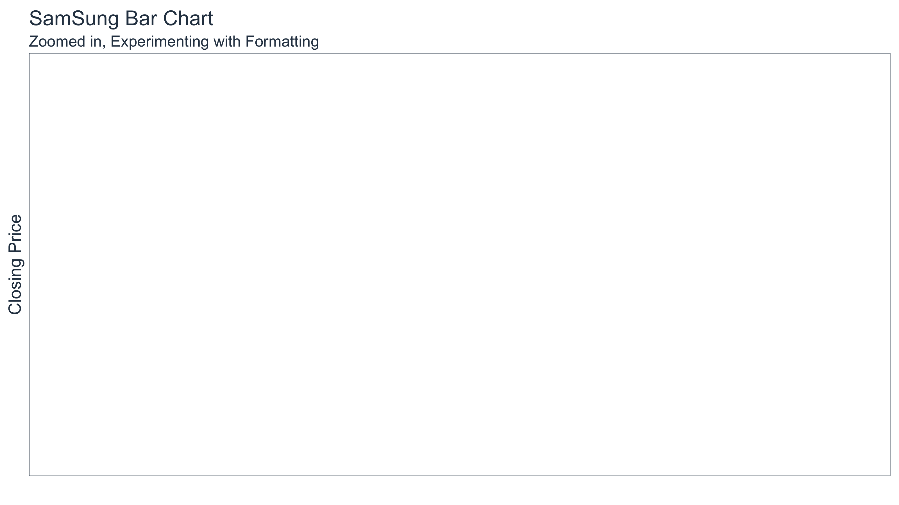
캔들 차트
캔들 차트 또한 바 차트를 그리는 것과 거의 같습니다.
SS %>%
ggplot(aes(x = date, y = close)) +
geom_candlestick(aes(open = open, high = high, low = low, close = close)) +
labs(title = "SamSung Candlestick Chart", y = "Closing Price", x = "") +
theme_tq()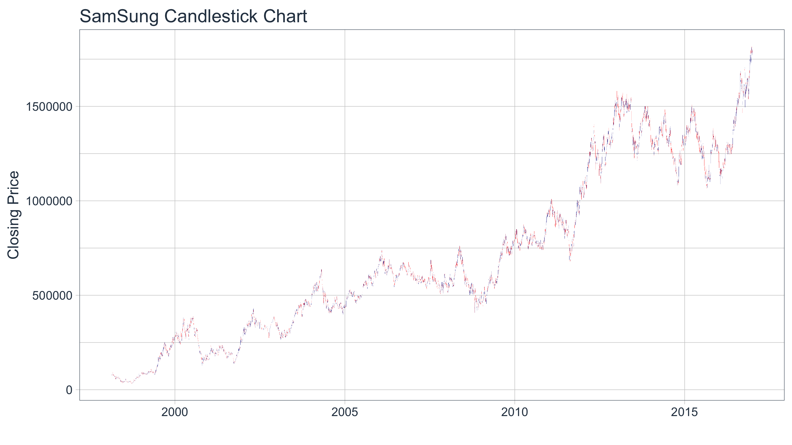
색상은color_up과color_down을 사용하여 선 색상을 조절할 수 있고, fill_up과fill_down은 사각형을 채 웁니다.
SS %>%
ggplot(aes(x = date, y = close)) +
geom_candlestick(aes(open = open, high = high, low = low, close = close),
color_up = "darkgreen", color_down = "darkred",
fill_up = "darkgreen", fill_down = "darkred") +
labs(title = "SamSung Candlestick Chart",
subtitle = "Zoomed in, Experimenting with Formatting",
y = "Closing Price", x = "") +
coord_x_date(xlim = c(end - weeks(6), end),
ylim = c(1600000, 1800000)) +
theme_tq()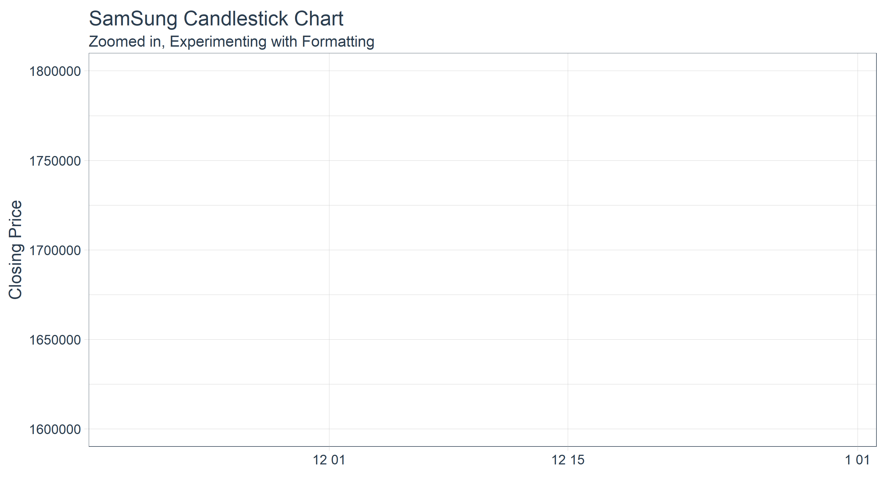
여러개의 차트를 그리기
facet_wrap을 사용하여 동시에 여러 주식을 시각화 할 수 있습니다. ggplot ()의 aes()에group을 추가하고ggplot 워크 플로우의 끝에서facet_wrap()함수와 결합함으로써 네 개의 “FANG”주식을 동시에 모두 볼 수 있습니다.
start <- end - weeks(6)
SHANK %>%
filter(date >= start - days(2 * 15)) %>%
ggplot(aes(x = date, y = close, group = symbol)) +
geom_candlestick(aes(open = open, high = high, low = low, close = close)) +
labs(title = "SHANK Candlestick Chart",
subtitle = "Experimenting with Mulitple Stocks",
y = "Closing Price", x = "") +
coord_x_date(xlim = c(start, end)) +
facet_wrap(~ symbol, ncol = 2, scale = "free_y") +
theme_tq()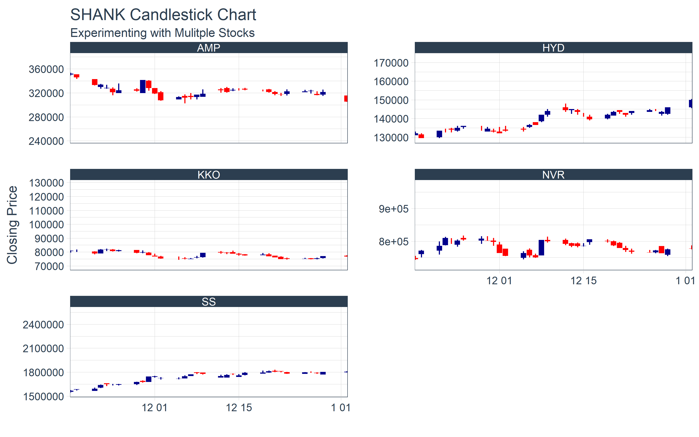
트랜드 시각화
Moving averages are critical to evaluating time-series trends. tidyquant includes geoms to enable “rapid prototyping” to quickly visualize signals using moving averages and Bollinger bands.
이동 평균
tidyquant에서는 다양한 이동평균 함수를 제공합니다.
- Simple moving averages (SMA)
- Exponential moving averages (EMA)
- Weighted moving averages (WMA)
- Double exponential moving averages (DEMA)
- Zero-lag exponential moving averages (ZLEMA)
- Volume-weighted moving averages (VWMA) (also known as VWAP)
- Elastic, volume-weighted moving averages (EVWMA) (also known as MVWAP)
이동 평균은geom_ma 함수로 차트에 추가 된 레이어로 적용됩니다. 기하 구조는TTR 패키지에서SMA,EMA,WMA,DEMA,ZLEMA,VWMA,EVWMA와 같은 기본 이동 평균 함수의 래퍼입니다.
Example 1: 50일/200일 단순 이동 평균 차트 작성
SS %>%
ggplot(aes(x = date, y = close)) +
geom_candlestick(aes(open = open, high = high, low = low, close = close)) +
geom_ma(ma_fun = SMA, n = 50, linetype = 5, size = 1.25) +
geom_ma(ma_fun = SMA, n = 200, color = "red", size = 1.25) +
labs(title = "SamSung Candlestick Chart",
subtitle = "50 and 200-Day SMA",
y = "Closing Price", x = "") +
coord_x_date(xlim = c(end - weeks(24), end),
ylim = c(1500000, 1850000)) +
theme_tq()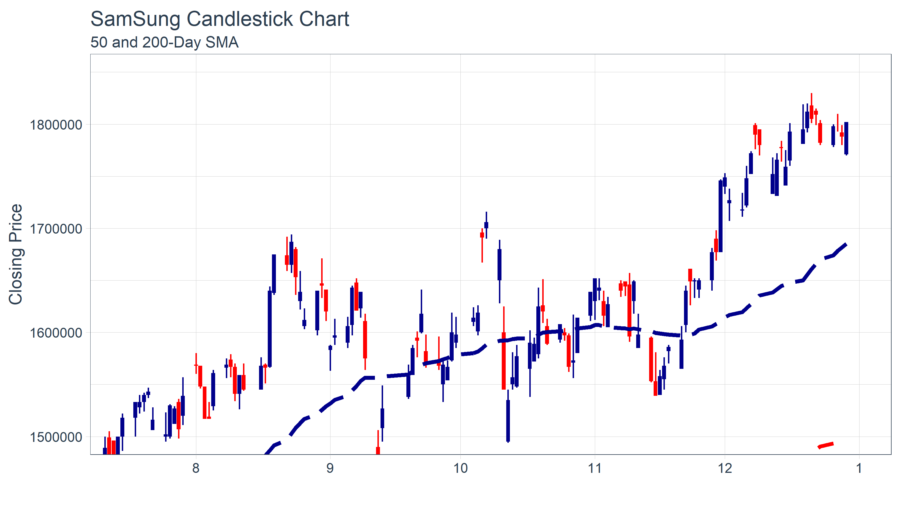
Example 2: 지수 이동 평균 차트
SS %>%
ggplot(aes(x = date, y = close)) +
geom_barchart(aes(open = open, high = high, low = low, close = close)) +
geom_ma(ma_fun = EMA, n = 50, wilder = TRUE, linetype = 5, size = 1.25) +
geom_ma(ma_fun = EMA, n = 200, wilder = TRUE, color = "red", size = 1.25) +
labs(title = "SamSung Bar Chart",
subtitle = "50 and 200-Day EMA",
y = "Closing Price", x = "") +
coord_x_date(xlim = c(end - weeks(24), end),
ylim = c(1500000, 1850000)) +
theme_tq()
볼린저 밴드
[Bollinger Bands] https://en.wikipedia.org/wiki/Bollinger_Bands)는 이동 평균(일반적으로 상하 2SD) 주위의 범위를 플로팅하여 변동성을 시각화하는 데 사용됩니다. 그것들은 이동 평균을 사용하기 때문에,geom_bbands 함수는geom_ma와 거의 동일하게 작동합니다. 동일한 7 개의 이동 평균이 호환됩니다. 가장 큰 차이점은 기본적으로 2 인 표준 편차 인sd 인수와 밴드를 계산하는 데 필요한 ‘high’, ’low’및 ’close’를 aes()에 추가하는 것입니다.
Example 1: SMA를 사용하여 BBands 적용
간단한 이동 평균을 사용하여 Bollinger Bands를 추가하는 기본 예제를 살펴 보겠습니다.
SS %>%
ggplot(aes(x = date, y = close, open = open,
high = high, low = low, close = close)) +
geom_candlestick() +
geom_bbands(ma_fun = SMA, sd = 2, n = 20) +
labs(title = "SamSung Candlestick Chart",
subtitle = "BBands with SMA Applied",
y = "Closing Price", x = "") +
coord_x_date(xlim = c(end - weeks(24), end),
ylim = c(1500000, 1850000)) +
theme_tq()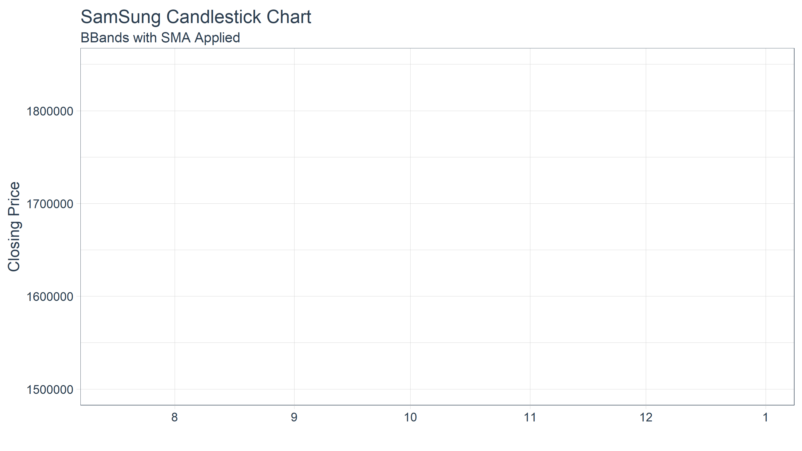
Example 2: Bollinger Bands의 모양 바꾸기
모양은color_ma,color_bands,alpha,fill 인자를 사용하여 수정할 수 있습니다. BBands에 새로운 서식을 적용한 Example 1과 같은 그림이 있습니다.
SS %>%
ggplot(aes(x = date, y = close, open = open,
high = high, low = low, close = close)) +
geom_candlestick() +
geom_bbands(ma_fun = SMA, sd = 2, n = 20,
linetype = 4, size = 1, alpha = 0.2,
fill = palette_light()[[1]],
color_bands = palette_light()[[1]],
color_ma = palette_light()[[2]]) +
labs(title = "SamSung Candlestick Chart",
subtitle = "BBands with SMA Applied, Experimenting with Formatting",
y = "Closing Price", x = "") +
coord_x_date(xlim = c(end - weeks(24), end),
ylim = c(1500000, 1850000)) +
theme_tq()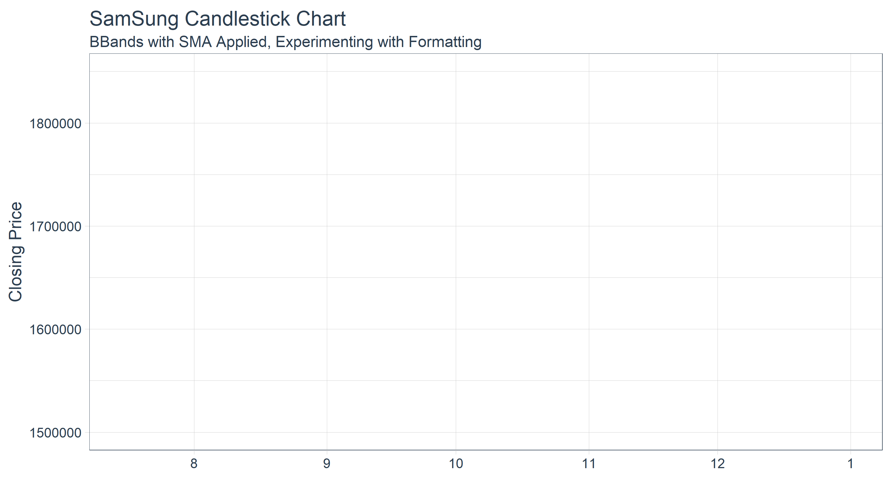
Example 3: 여러 주식에 BBands 추가
start <- end - weeks(12)
SHANK %>%
filter(date >= start - days(2 * 20)) %>%
ggplot(aes(x = date, y = close,
open = open, high = high, low = low, close = close,
group = symbol)) +
geom_barchart() +
geom_bbands(ma_fun = SMA, sd = 2, n = 20, linetype = 5) +
labs(title = "SHANK Bar Chart",
subtitle = "BBands with SMA Applied, Experimenting with Multiple Stocks",
y = "Closing Price", x = "") +
coord_x_date(xlim = c(start, end)) +
facet_wrap(~ symbol, ncol = 2, scales = "free_y") +
theme_tq()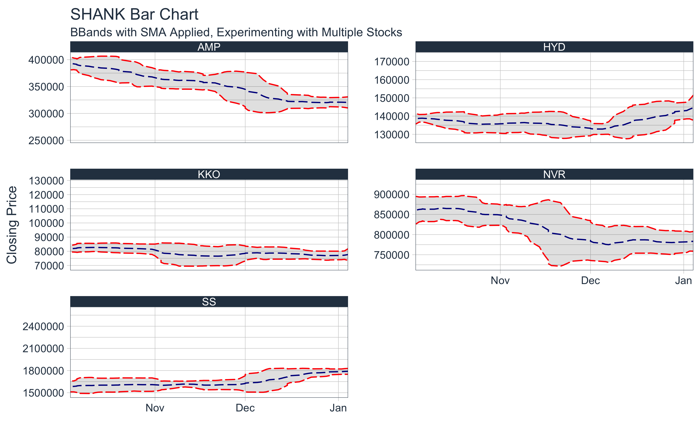
ggplot2 함수
기본 ggplot2는 재무 데이터를 분석하는데 유용한 많은 기능을 가지고 있습니다. 네이버(NVR)을 사용하여 몇 가지 간단한 예제를 살펴 보겠습니다.
Example 1 : scale_y_log10을 사용한 로그 스케일
ggplot2는 y 축을 로그 스케일로 스케일하기위한scale_y_log10 ()함수를 가지고 있습니다. 이는 분석 할 수있는 선형 추세를 조정하는 경향이 있으므로 매우 유용합니다.
Continuous Scale:
NVR %>%
ggplot(aes(x = date, y = adjusted)) +
geom_line(color = palette_light()[[1]]) +
scale_y_continuous() +
labs(title = "Naver Line Chart",
subtitle = "Continuous Scale",
y = "Closing Price", x = "") +
theme_tq()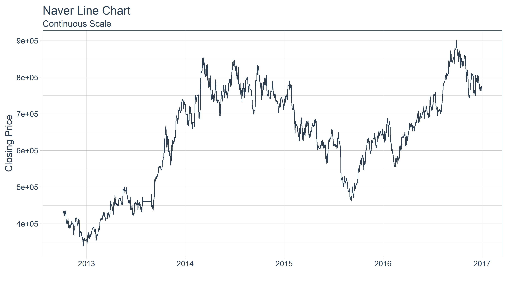
Log Scale:
NVR %>%
ggplot(aes(x = date, y = adjusted)) +
geom_line(color = palette_light()[[1]]) +
scale_y_log10() +
labs(title = "Naver Line Chart",
subtitle = "Log Scale",
y = "Closing Price", x = "") +
theme_tq()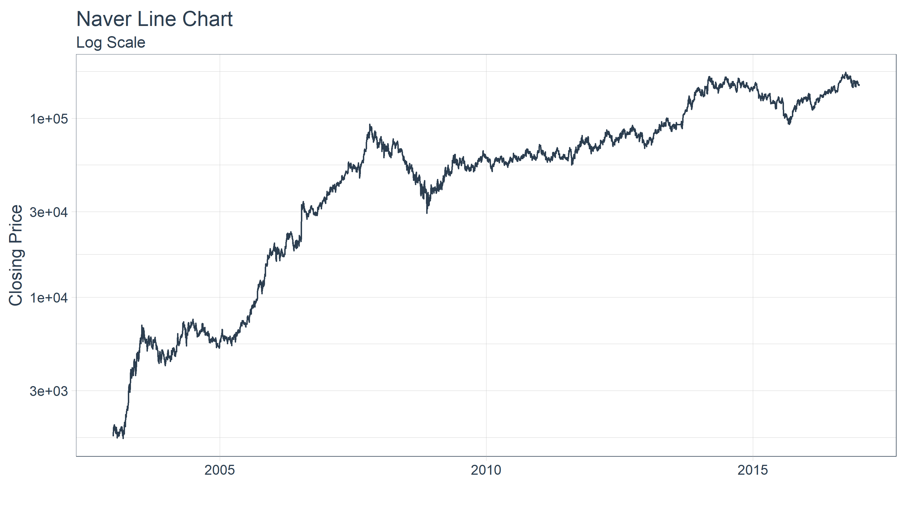
Example 2: geom_smooth로 회귀 추세선
우리는 워크 플로우에geom_smooth ()함수를 빠르게 추가하는 추세선을 적용 할 수 있습니다. 이 함수는 선형(lm)과 loess(loess) 를 포함한 몇 가지 예측 방법을 가지고 있습니다.
Linear:
NVR %>%
ggplot(aes(x = date, y = adjusted)) +
geom_line(color = palette_light()[[1]]) +
scale_y_log10() +
geom_smooth(method = "lm") +
labs(title = "Naver Line Chart",
subtitle = "Log Scale, Applying Linear Trendline",
y = "Adjusted Closing Price", x = "") +
theme_tq()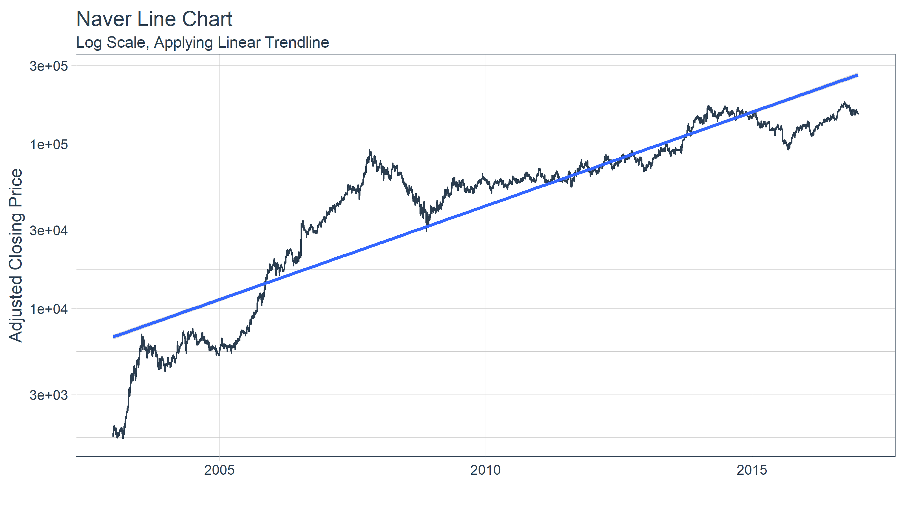
Example 3: geom_segment로 차트 볼륨
우리는geom_segment ()함수를 사용하여 라인의 시작과 끝을 xy 점으로하는 일일 볼륨을 차트로 표시 할 수 있습니다. aes()를 사용하여 볼륨의 값을 기준으로 색상을 지정하여 이러한 데이터를 강조 표시합니다.
NVR %>%
ggplot(aes(x = date, y = volume)) +
geom_segment(aes(xend = date, yend = 0, color = volume)) +
geom_smooth(method = "loess", se = FALSE) +
labs(title = "Naver Volume Chart",
subtitle = "Charting Daily Volume",
y = "Volume", x = "") +
theme_tq() +
theme(legend.position = "none") 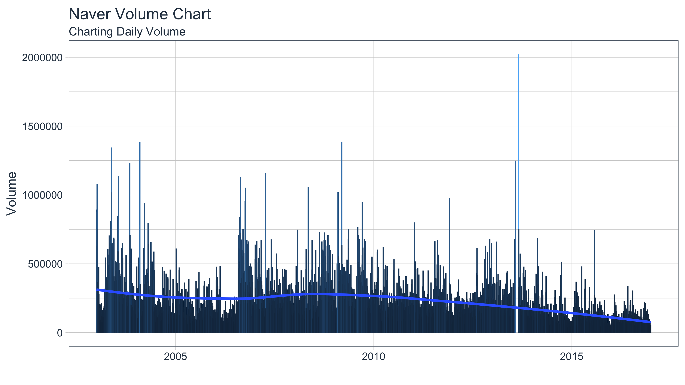
특정 지역을 확대 할 수 있습니다. scale_color_gradient를 사용하여 고점 및 저점을 빠르게 시각화 할 수 있으며geom_smooth를 사용하여 추세를 볼 수 있습니다.
start <- end - weeks(24)
NVR %>%
filter(date >= start - days(50)) %>%
ggplot(aes(x = date, y = volume)) +
geom_segment(aes(xend = date, yend = 0, color = volume)) +
geom_smooth(method = "loess", se = FALSE) +
labs(title = "Naver Bar Chart",
subtitle = "Charting Daily Volume, Zooming In",
y = "Volume", x = "") +
coord_x_date(xlim = c(start, end)) +
scale_color_gradient(low = "red", high = "darkblue") +
theme_tq() +
theme(legend.position = "none") 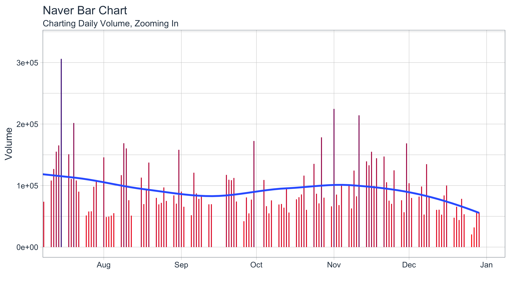
테마
tidyquant 패키지는 3 가지 테마로 구성되어있어 신속하게 재무 차트를 조정 할 수 있습니다.
-
Light:
theme_tq()+scale_color_tq()+scale_fill_tq() -
Dark:
theme_tq_dark()+scale_color_tq(theme = "dark")+scale_fill_tq(theme = "dark") -
Green:
theme_tq_green()+scale_color_tq(theme = "green")+scale_fill_tq(theme = "green")
Dark
n_mavg <- 50 # Number of periods (days) for moving average
SHANK %>%
filter(date >= start - days(2 * n_mavg)) %>%
ggplot(aes(x = date, y = close, color = symbol)) +
geom_line(size = 1) +
geom_ma(n = 15, color = "darkblue", size = 1) +
geom_ma(n = n_mavg, color = "red", size = 1) +
labs(title = "Dark Theme",
x = "", y = "Closing Price") +
coord_x_date(xlim = c(start, end)) +
facet_wrap(~ symbol, scales = "free_y") +
theme_tq_dark() +
scale_color_tq(theme = "dark")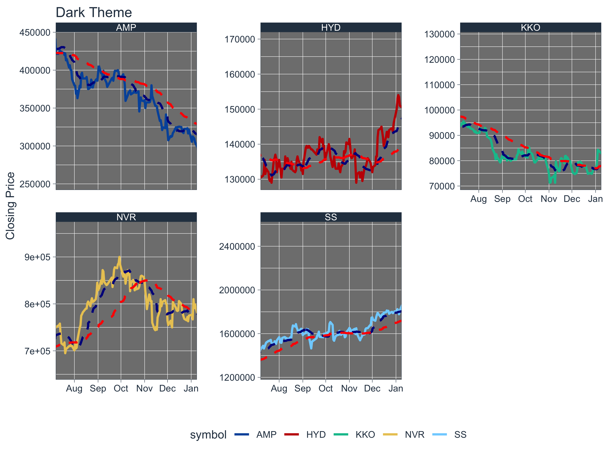